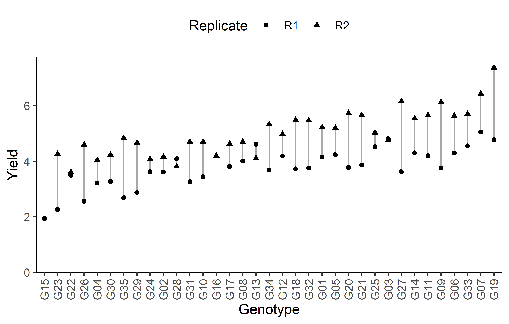
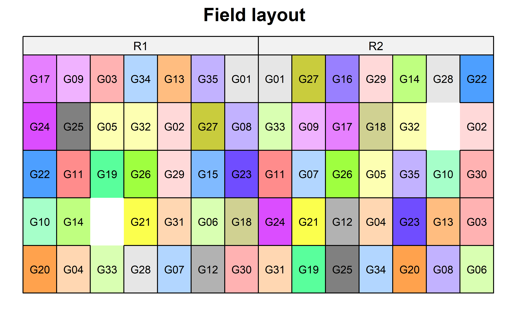
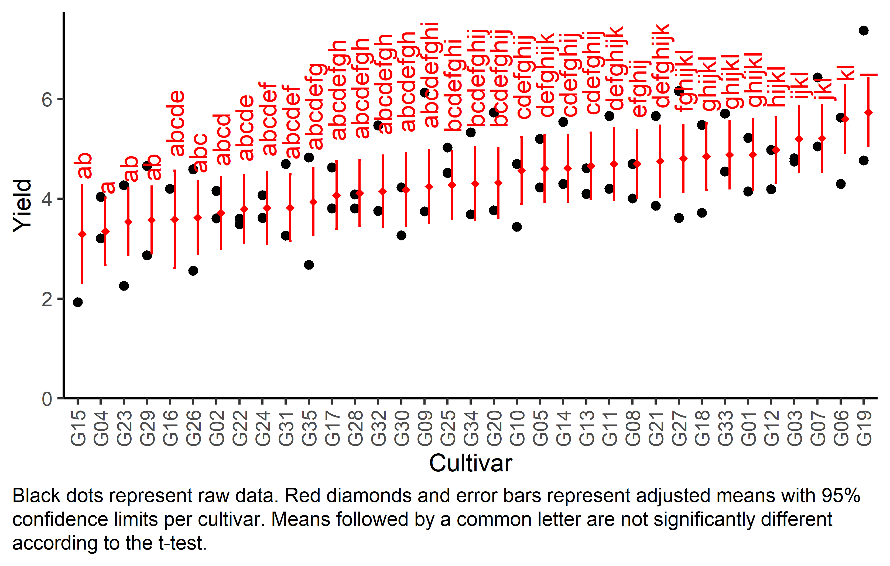

One-way row column design
Paul Schmidt ![]()
Data
This example is taken from Chapter “3.10 Analysis of a resolvable row-column design” of the course material “Mixed models for metric data (3402-451)” by Prof. Dr. Hans-Peter Piepho. It considers data published in Kempton, Fox, and Cerezo (1996) from a yield trial laid out as a resolvable row-column design. The trial had 35 genotypes (gen), 2 complete replicates (rep) with 5 rows (row) and 7 columns (col). Thus, a complete replicate is subdivided into incomplete rows and columns.
Import
The data is available as part of the {agridat} package:
dat <- as_tibble(agridat::kempton.rowcol)
dat# A tibble: 68 × 5
rep row col gen yield
<fct> <int> <int> <fct> <dbl>
1 R1 1 1 G20 3.77
2 R1 1 2 G04 3.21
3 R1 1 3 G33 4.55
4 R1 1 4 G28 4.09
5 R1 1 5 G07 5.05
6 R1 1 6 G12 4.19
7 R1 1 7 G30 3.27
8 R1 2 1 G10 3.44
9 R1 2 2 G14 4.3
10 R1 2 4 G21 3.86
# ℹ 58 more rowsFormat
For our analysis, gen, row and col should be encoded as factors. However, the desplot() function needs row and col as formatted as integers. Therefore we create copies of these columns encoded as factors and named rowF and colF:
Explore
We make use of dlookr::describe() to conveniently obtain descriptive summary tables. Here, we get can summarize per block and per cultivar.
dat %>%
group_by(gen) %>%
dlookr::describe(yield) %>%
select(2:sd) %>%
arrange(desc(mean))# A tibble: 35 × 5
gen n na mean sd
<fct> <int> <int> <dbl> <dbl>
1 G19 2 0 6.07 1.84
2 G07 2 0 5.74 0.976
3 G33 2 0 5.13 0.820
4 G06 2 0 4.96 0.940
5 G09 2 0 4.94 1.68
6 G11 2 0 4.93 1.03
7 G14 2 0 4.92 0.877
8 G27 2 0 4.89 1.80
9 G03 2 0 4.78 0.0424
10 G25 2 0 4.78 0.361
# ℹ 25 more rowsAdditionally, we can decide to plot our data.
Click to show/hide code
# sort genotypes by mean yield
gen_order <- dat %>%
group_by(gen) %>%
summarise(mean = mean(yield, na.rm = TRUE)) %>%
arrange(mean) %>%
pull(gen) %>%
as.character()
ggplot(data = dat) +
aes(
y = yield,
x = gen,
shape = rep
) +
geom_line(
aes(group = gen),
color = "darkgrey"
) +
geom_point() +
scale_x_discrete(
name = "Genotype",
limits = gen_order
) +
scale_y_continuous(
name = "Yield",
limits = c(0, NA),
expand = expansion(mult = c(0, 0.05))
) +
scale_shape_discrete(
name = "Replicate"
) +
guides(shape = guide_legend(nrow = 1)) +
theme_classic() +
theme(
legend.position = "top",
axis.text.x = element_text(angle = 90, vjust = 0.5)
)
Finally, since this is an experiment that was laid with a certain experimental design (= a resolvable row column design) - it makes sense to also get a field plan. This can be done via desplot() from {desplot}. In this case it is worth noting that there is missing data, as yield values for two plots are not present in the data.
Click to show/hide code
desplot(
data = dat,
form = gen ~ col + row | rep, # fill color per genotype, headers per replicate
text = gen,
cex = 0.7,
shorten = "no",
out1 = row, out1.gpar=list(col="black"), # lines between rows
out2 = col, out2.gpar=list(col="black"), # lines between columns
main = "Field layout",
show.key = FALSE
) 
Model
Finally, we can decide to fit a linear model with yield as the response variable and gen as fixed effects, since our goal is to compare them to each other. Since the trial was laid out in rows and columns, we also need rowF and colF effects in the model, but these can be taken either as a fixed or as random effects. Since our goal is to compare genotypes, we will determine which of the two models we prefer by comparing the average standard error of a difference (s.e.d.) for the comparisons between adjusted genotype means - the lower the s.e.d. the better.
# blocks as random (linear mixed model)
mod.rrc <- lmer(yield ~ gen + (1 | rowF) + (1 | colF),
data = dat)
mod.rrc %>%
emmeans(pairwise ~ "gen",
adjust = "tukey",
lmer.df = "kenward-roger") %>%
pluck("contrasts") %>% # extract diffs
as_tibble() %>% # format to table
pull("SE") %>% # extract s.e.d. column
mean() # get arithmetic mean[1] 1.18948As a result, we find that the model with random row and column effects has the slightly smaller s.e.d. and is therefore more precise in terms of comparing genotypes.
It would be at this moment (i.e. after fitting the model and before running the ANOVA), that you should check whether the model assumptions are met. Find out more in the summary article “Model Diagnostics”
ANOVA
Based on our model, we can then conduct an ANOVA:
ANOVA <- anova(mod.rrc)
ANOVAType III Analysis of Variance Table with Satterthwaite's method
Sum Sq Mean Sq NumDF DenDF F value Pr(>F)
gen 32.157 0.94578 34 33 0.8969 0.6233Accordingly, the ANOVA’s F-test did not find the cultivar effects to be statistically significant (p = 0.623).
Mean comparison
Besides an ANOVA, one may also want to compare adjusted yield means between cultivars via post hoc tests (t-test, Tukey test etc.).
mean_comp <- mod.rrc %>%
emmeans(specs = ~ gen) %>% # adj. mean per genotype
cld(adjust = "Tukey", Letters = letters) # compact letter display (CLD)
mean_comp gen emmean SE df lower.CL upper.CL .group
G15 1.93 1.151 32.5 -2.072 5.93 a
G23 3.27 0.804 32.5 0.470 6.06 a
G22 3.54 0.794 32.5 0.784 6.31 a
G26 3.58 0.842 24.6 0.561 6.59 a
G04 3.62 0.796 32.5 0.857 6.39 a
G30 3.75 0.851 23.9 0.692 6.81 a
G35 3.75 0.800 32.5 0.975 6.54 a
G29 3.77 0.800 32.5 0.985 6.55 a
G24 3.85 0.853 23.9 0.779 6.91 a
G02 3.88 0.847 24.6 0.852 6.92 a
G28 3.95 0.811 32.5 1.132 6.77 a
G31 3.98 0.802 32.5 1.192 6.77 a
G10 4.07 0.804 32.5 1.275 6.87 a
G16 4.20 1.163 32.5 0.155 8.24 a
G17 4.22 0.794 32.5 1.459 6.98 a
G08 4.36 0.796 32.5 1.587 7.12 a
G13 4.36 0.804 32.5 1.560 7.15 a
G34 4.51 0.859 23.9 1.422 7.60 a
G12 4.58 0.802 32.5 1.797 7.37 a
G18 4.60 0.804 32.5 1.805 7.40 a
G32 4.62 0.847 24.6 1.582 7.65 a
G01 4.68 0.858 24.6 1.611 7.76 a
G05 4.71 0.798 32.5 1.939 7.49 a
G20 4.75 0.872 24.6 1.629 7.87 a
G21 4.76 0.858 24.6 1.686 7.83 a
G25 4.78 0.796 32.5 2.007 7.54 a
G03 4.78 0.804 32.5 1.985 7.58 a
G27 4.89 0.800 32.5 2.110 7.67 a
G14 4.92 0.804 32.5 2.125 7.72 a
G11 4.93 0.847 24.6 1.897 7.96 a
G09 4.94 0.849 23.9 1.889 7.99 a
G06 4.96 0.796 32.5 2.197 7.73 a
G33 5.13 0.796 32.5 2.362 7.90 a
G07 5.74 0.802 32.5 2.952 8.53 a
G19 6.07 0.796 32.5 3.302 8.84 a
Degrees-of-freedom method: kenward-roger
Confidence level used: 0.95
Conf-level adjustment: sidak method for 35 estimates
P value adjustment: tukey method for comparing a family of 35 estimates
significance level used: alpha = 0.05
NOTE: If two or more means share the same grouping symbol,
then we cannot show them to be different.
But we also did not show them to be the same. It can be seen that while some genotypes have a higher yield than others, no differences are found to be statistically significant here. Thus, this is in agreement with the non-significant ANOVA results.
Note that if you would like to see the underlying individual contrasts/differences between adjusted means, simply add details = TRUE to the cld() statement. Furthermore, check out the Summary Article “Compact Letter Display”.
Finally, we can create a plot that displays both the raw data and the results, i.e. the comparisons of the adjusted means that are based on the linear model.
Click to show/hide code
# reorder genotype factor levels according to adjusted mean
my_caption <- "Black dots represent raw data. Red diamonds and error bars represent adjusted means with 95% confidence limits per cultivar. Means followed by a common letter are not significantly different according to the Tukey-test."
ggplot() +
# green/red dots representing the raw data
geom_point(
data = dat,
aes(y = yield, x = gen)
) +
# red diamonds representing the adjusted means
geom_point(
data = mean_comp,
aes(y = emmean, x = gen),
shape = 18,
color = "red",
position = position_nudge(x = 0.2)
) +
# red error bars representing the confidence limits of the adjusted means
geom_errorbar(
data = mean_comp,
aes(ymin = lower.CL, ymax = upper.CL, x = gen),
color = "red",
width = 0.1,
position = position_nudge(x = 0.2)
) +
# red letters
geom_text(
data = mean_comp,
aes(y = upper.CL, x = gen, label = str_trim(.group)),
color = "red",
angle = 90,
hjust = -0.2,
position = position_nudge(x = 0.2)
) +
scale_x_discrete(
name = "Cultivar",
limits = as.character(mean_comp$gen)
) +
scale_y_continuous(
name = "Yield",
# limits = c(0, NA),
expand = expansion(mult = c(0, 0.05))
) +
coord_cartesian(ylim = c(0, NA)) +
labs(caption = my_caption) +
theme_classic() +
theme(plot.caption = element_textbox_simple(margin = margin(t = 5)),
plot.caption.position = "plot",
axis.text.x = element_text(angle = 90, vjust = 0.5))
References
Citation
@online{schmidt2023,
author = {Paul Schmidt},
title = {One-Way Row Column Design},
date = {2023-11-08},
url = {https://schmidtpaul.github.io/dsfair_quarto//ch/exan/simple/rowcol_kemptonfox1997.html},
langid = {en},
abstract = {One-way ANOVA \& pairwise comparison post hoc tests in a
resolvable row column design.}
}